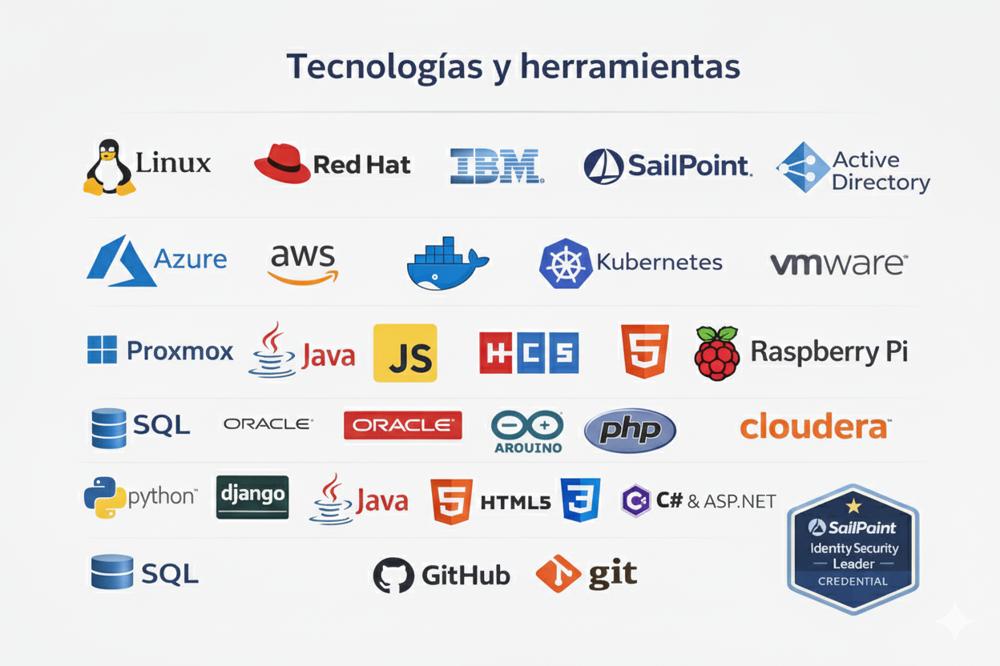

Perfil Profesional
- Desarrollador Full Stack
- Gestión de Identidades (IAM/GIA)
- Analista Programador
- Programador y Técnico
- Gestor Incidencias Técnicas
- Responsable Informático (Inglés)
- Administrador de Sistemas (Inglés)
- Profesor Informática
- Especialista Informático (Inglés)
- Admin de Sistemas ISP / Operador
- Técnico Informático & Admin
- Prácticas F.P.II. Informática
- Otros
Aplicaciones Activas
Escritor Pro (PWA)
Integración de dictado inteligente y diarios personales cifrados.
Lanzar AplicaciónGestión Familiar (Django)
Sistema centralizado para organización y gestión de accesos.
Ver Demo OnlineCertificaciones & Stack
SailPoint Technologies
Learn.Microsoft
AWS Certified
CyberArk Security
IBM Security
Seguridad Informática
Lenguajes Programación
BBDD / Cloudera
